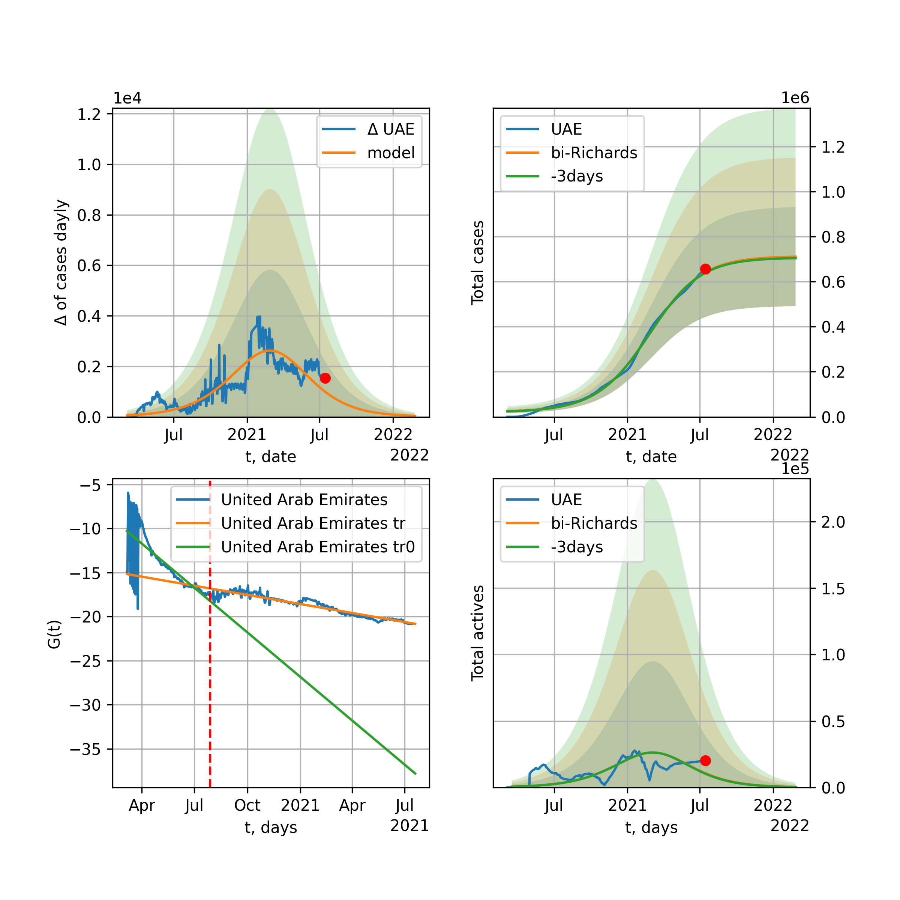

Multi-logistic model of COVID-19 dynamics
Model, code, results
Project maintained by algmaknick Hosted on GitHub Pages — Theme by mattgraham
World

World data at: 2020-11-17
+3 day model MAPE: 0.000630
model: bi-Richards
coeffs: [1.78971712e+07 1.07524164e+00 1.69126870e+02 4.23720249e-02]
rational stdev: 0.178251
forecast at the end of period: +666 days
deltaDaycases: 2650
total cases: 118148812 ± 21060107
total death: 2837088 ± 1517138
bi-Richards approximation splitting point: 200
trend coefficient of determination: 0.817121
intercept: -3.421021
slope: -0.011525
trend coefficient of determination: 0.210263
intercept: -6.479935
slope: 0.005058
European Union

European Union data at: 2020-11-17
+3 day model MAPE: 0.027028
model: bi-Richards
coeffs: [8.67652472e+06 4.13426441e-02 2.51810700e+02 6.10200894e+00]
rational stdev: 0.241234
forecast at the end of period: +109 days
deltaDaycases: 1
total cases: 10147571 ± 2447937
total death: 233497 ± 168982
bi-Richards approximation splitting point: 200
trend coefficient of determination: 0.535523
intercept: -73.861153
slope: -0.128370
trend coefficient of determination: 0.958272
intercept: -65.005316
slope: -0.139626
Brazil

Brazil data at: 2020-11-17
+3 day model MAPE: 0.001068
model: bi-Richards
coeffs: [-6.27470240e+04 1.53439396e+00 1.81471028e+02 1.08760274e-01]
rational stdev: 0.262491
forecast at the end of period: +256 days
deltaDaycases: 223
total cases: 6752153 ± 1772377
total death: 190446 ± 149970
bi-Richards approximation splitting point: 205
trend coefficient of determination: 0.636044
intercept: -2.677477
slope: -0.020044
trend coefficient of determination: 0.089536
intercept: -5.100249
slope: -0.008814
Russia

Russia data at: 2020-11-17
+3 day model MAPE: 0.001841
model: bi-Richards
coeffs: [2.82906690e+06 6.81099157e-01 6.07696948e+01 3.05691178e-02]
rational stdev: 0.179671
forecast at the end of period: +326 days
deltaDaycases: 81
total cases: 3958895 ± 711299
total death: 68340 ± 36836
bi-Richards approximation splitting point: 200
trend coefficient of determination: 0.731531
intercept: -3.057181
slope: -0.015913
trend coefficient of determination: 0.032382
intercept: -5.401969
slope: 0.002264
USA

USA data at: 2020-11-17
+3 day model MAPE: 0.001474
model: bi-Richards
coeffs: [-6.72553538e+05 2.57198567e-01 1.76654611e+02 7.68708090e-01]
rational stdev: 0.284955
forecast at the end of period: +669 days
deltaDaycases: 806
total cases: 22382504 ± 6377998
total death: 486572 ± 415952
bi-Richards approximation splitting point: 155
trend coefficient of determination: 0.702538
intercept: -10.397486
slope: -0.047445
trend coefficient of determination: 0.001965
intercept: -16.957843
slope: -0.000409
Spain

Spain data at: 2020-11-17
+3 day model MAPE: 0.006331
model: bi-Richards
coeffs: [ 2.77615510e+06 1.32676397e+00 -1.01580071e+00 1.29793966e-02]
rational stdev: 0.264243
forecast at the end of period: +466 days
deltaDaycases: 14
total cases: 3202614 ± 846268
total death: 86974 ± 68946
bi-Richards approximation splitting point: 200
trend coefficient of determination: 0.156579
intercept: -3.920959
slope: -0.011105
trend coefficient of determination: 0.019529
intercept: -3.678084
slope: -0.003783
Italy

Italy data at: 2020-11-17
+3 day model MAPE: 0.036019
model: bi-Richards
coeffs: [1.09977603e+06 6.48600216e-02 2.57929238e+02 4.01828116e+00]
rational stdev: 0.160383
forecast at the end of period: +81 days
deltaDaycases: 0
total cases: 1349594 ± 216452
total death: 50649 ± 24369
bi-Richards approximation splitting point: 200
trend coefficient of determination: 0.529821
intercept: -43.497177
slope: -0.090238
trend coefficient of determination: 0.600505
intercept: -44.421085
slope: -0.052139
United Kingdom

United Kingdom data at: 2020-11-17
+3 day model MAPE: 0.008658
model: bi-Richards
coeffs: [1.85004627e+06 1.03045206e-01 2.11616995e+02 4.08845534e-01]
rational stdev: 0.207571
forecast at the end of period: +186 days
deltaDaycases: 18
total cases: 2173023 ± 451057
total death: 81245 ± 50592
bi-Richards approximation splitting point: 200
trend coefficient of determination: 0.625893
intercept: -6.704338
slope: -0.027149
trend coefficient of determination: 0.269335
intercept: -6.987911
slope: -0.010605
France

France data at: 2020-11-17
+3 day model MAPE: 0.032381
model: bi-Richards
coeffs: [1.87770580e+06 3.53996023e-02 2.49153295e+02 1.26506072e+01]
rational stdev: 0.098733
forecast at the end of period: +151 days
deltaDaycases: 0
total cases: 2020246 ± 199465
total death: 45897 ± 13594
bi-Richards approximation splitting point: 95
trend coefficient of determination: 0.734480
intercept: -99.205716
slope: -0.810930
trend coefficient of determination: 0.868751
intercept: -132.954810
slope: -0.187019
Germany

Germany data at: 2020-11-17
+3 day model MAPE: 0.016760
model: bi-Richards
coeffs: [6.44150168e+05 5.09107207e-02 2.45001520e+02 6.60840569e+00]
rational stdev: 0.207955
forecast at the end of period: +60 days
deltaDaycases: 0
total cases: 869130 ± 180739
total death: 13810 ± 8615
bi-Richards approximation splitting point: 210
trend coefficient of determination: 0.457064
intercept: -74.270653
slope: -0.087584
trend coefficient of determination: 0.920342
intercept: -56.928212
slope: -0.143573
Turkey

Turkey data at: 2020-11-17
+3 day model MAPE: 0.007727
model: bi-Richards
coeffs: [ 5.37430640e+05 9.12899262e-01 -2.88535893e+02 9.97092337e-03]
rational stdev: 0.188249
forecast at the end of period: +172 days
deltaDaycases: 684
total cases: 617213 ± 116189
total death: 17142 ± 9680
bi-Richards approximation splitting point: 75
trend coefficient of determination: 0.777624
intercept: -0.970279
slope: -0.058004
trend coefficient of determination: 0.000005
intercept: -5.329566
slope: -0.000008
Iran

Iran data at: 2020-11-17
+3 day model MAPE: 0.006582
model: bi-Richards
coeffs: [6.04068023e+06 1.88150457e-01 1.69493166e+02 7.58140921e-02]
rational stdev: 0.262140
forecast at the end of period: +410 days
deltaDaycases: 862
total cases: 6587624 ± 1726881
total death: 354758 ± 278988
bi-Richards approximation splitting point: 200
trend coefficient of determination: 0.758323
intercept: -2.835678
slope: -0.019685
trend coefficient of determination: 0.747715
intercept: -8.890597
slope: 0.013636
Canada

Canada data at: 2020-11-17
+3 day model MAPE: 0.007795
model: bi-Richards
coeffs: [1.14111369e+06 3.23740089e-01 6.60310039e+01 4.17557324e-02]
rational stdev: 0.248378
forecast at the end of period: +312 days
deltaDaycases: 424
total cases: 1231084 ± 305774
total death: 44532 ± 33182
bi-Richards approximation splitting point: 200
trend coefficient of determination: 0.776203
intercept: -2.431598
slope: -0.024382
trend coefficient of determination: 0.383377
intercept: -7.286061
slope: 0.010279
South Africa

South Africa data at: 2020-11-17
+3 day model MAPE: 0.002820
model: bi-Richards
coeffs: [1.40917702e+05 4.06013596e+00 7.67469712e+01 8.35185301e-03]
rational stdev: 0.296333
forecast at the end of period: +46 days
deltaDaycases: 329
total cases: 781478 ± 231577
total death: 21169 ± 18819
bi-Richards approximation splitting point: 200
trend coefficient of determination: 0.700775
intercept: -1.696580
slope: -0.019489
trend coefficient of determination: 0.013063
intercept: -6.673648
slope: 0.001949
Belgium

Belgium data at: 2020-11-17
+3 day model MAPE: 0.018381
model: bi-Richards
coeffs: [4.64808458e+05 6.20994787e-02 2.34862354e+02 4.93914914e+00]
rational stdev: 0.180098
forecast at the end of period: +46 days
deltaDaycases: 0
total cases: 530758 ± 95588
total death: 14568 ± 7871
bi-Richards approximation splitting point: 170
trend coefficient of determination: 0.558642
intercept: -45.510970
slope: -0.124474
trend coefficient of determination: 0.800395
intercept: -39.935027
slope: -0.112409
Peru

Peru data at: 2020-11-17
+3 day model MAPE: 0.002268
model: bi-Richards
coeffs: [5.88994728e+05 2.95987034e+00 2.64762095e+01 1.13312554e-02]
rational stdev: 0.251698
forecast at the end of period: +46 days
deltaDaycases: 231
total cases: 950663 ± 239280
total death: 35720 ± 26971
bi-Richards approximation splitting point: 110
trend coefficient of determination: 0.802384
intercept: -1.461201
slope: -0.026837
trend coefficient of determination: 0.756786
intercept: -2.417520
slope: -0.014885
Netherlands

Netherlands data at: 2020-11-17
+3 day model MAPE: 0.018148
model: bi-Richards
coeffs: [4.16680067e+05 4.95693816e-02 2.32905856e+02 3.09030475e+00]
rational stdev: 0.084828
forecast at the end of period: +46 days
deltaDaycases: 2
total cases: 466905 ± 39606
total death: 8802 ± 2239
bi-Richards approximation splitting point: 150
trend coefficient of determination: 0.645296
intercept: -29.433487
slope: -0.093573
trend coefficient of determination: 0.838803
intercept: -28.702780
slope: -0.059023
India

India data at: 2020-11-17
+3 day model MAPE: 0.000848
model: bi-Richards
coeffs: [6.26664416e+06 9.40817487e-02 1.48900554e+02 3.51433498e-01]
rational stdev: 0.223777
forecast at the end of period: +326 days
deltaDaycases: 108
total cases: 10461874 ± 2341125
total death: 153802 ± 103252
bi-Richards approximation splitting point: 92
trend coefficient of determination: 0.904869
intercept: -3.670343
slope: -0.048196
trend coefficient of determination: 0.977320
intercept: -5.490687
slope: -0.021738
Switzerland

Switzerland data at: 2020-11-17
+3 day model MAPE: 0.026691
model: bi-Richards
coeffs: [2.44850320e+05 6.91690572e-02 2.40883397e+02 3.66982324e+00]
rational stdev: 0.195973
forecast at the end of period: +46 days
deltaDaycases: 0
total cases: 281093 ± 55086
total death: 3751 ± 2205
bi-Richards approximation splitting point: 205
trend coefficient of determination: 0.364991
intercept: -37.672716
slope: -0.047005
trend coefficient of determination: 0.828188
intercept: -18.414898
slope: -0.121168
Ecuador

Ecuador data at: 2020-11-17
+3 day model MAPE: 0.001706
model: bi-Richards
coeffs: [ 1.67212587e+05 1.38939301e+00 -8.81329460e+01 1.20826701e-02]
rational stdev: 0.081064
forecast at the end of period: +186 days
deltaDaycases: 45
total cases: 229405 ± 18596
total death: 16498 ± 4012
bi-Richards approximation splitting point: 80
trend coefficient of determination: 0.274495
intercept: -2.237501
slope: -0.047409
trend coefficient of determination: 0.029473
intercept: -4.469625
slope: -0.003935
Portugal

Portugal data at: 2020-11-17
+3 day model MAPE: 0.037383
model: bi-Richards
coeffs: [2.34302366e+05 4.82019496e-02 2.46682840e+02 4.12272086e+00]
rational stdev: 0.214602
forecast at the end of period: +46 days
deltaDaycases: 11
total cases: 292472 ± 62765
total death: 4515 ± 2906
bi-Richards approximation splitting point: 170
trend coefficient of determination: 0.627096
intercept: -37.683971
slope: -0.097449
trend coefficient of determination: 0.806688
intercept: -41.583091
slope: -0.047332
Saudi Arabia

Saudi Arabia data at: 2020-11-17
+3 day model MAPE: 0.000595
model: bi-Richards
coeffs: [3.13914150e+04 2.35138327e+00 4.41995102e+01 1.08767762e-02]
rational stdev: 0.228714
forecast at the end of period: +46 days
deltaDaycases: 138
total cases: 363736 ± 83191
total death: 5849 ± 4013
bi-Richards approximation splitting point: 200
trend coefficient of determination: 0.970888
intercept: -1.782459
slope: -0.024519
trend coefficient of determination: 0.184657
intercept: -5.981101
slope: -0.004142
Sweden

Sweden data at: 2020-11-17
+3 day model MAPE: 0.062145
model: bi-Richards
coeffs: [1.09614964e+05 6.35914063e-02 2.57029083e+02 9.07450846e+00]
rational stdev: 0.264242
forecast at the end of period: +81 days
deltaDaycases: 0
total cases: 197429 ± 52169
total death: 6386 ± 5062
bi-Richards approximation splitting point: 200
trend coefficient of determination: 0.687334
intercept: -64.457212
slope: -0.292144
trend coefficient of determination: 0.727146
intercept: -95.000935
slope: -0.065325
Pakistan

Pakistan data at: 2020-11-17
+3 day model MAPE: 0.009795
model: bi-Richards
coeffs: [ 4.53578684e+05 7.91094389e-01 -1.26170119e+02 1.23862830e-02]
rational stdev: 0.278131
forecast at the end of period: +172 days
deltaDaycases: 1103
total cases: 606830 ± 168778
total death: 12073 ± 10073
bi-Richards approximation splitting point: 170
trend coefficient of determination: 0.748997
intercept: -1.651970
slope: -0.023687
trend coefficient of determination: 0.569649
intercept: -9.095046
slope: 0.012961
Ireland

Ireland data at: 2020-11-17
+3 day model MAPE: 0.011344
model: bi-Richards
coeffs: [4.20090275e+04 4.95172079e-02 2.27722754e+02 3.14641960e+00]
rational stdev: 0.603357
forecast at the end of period: +46 days
deltaDaycases: 0
total cases: 68186 ± 41140
total death: 1980 ± 3583
bi-Richards approximation splitting point: 170
trend coefficient of determination: 0.598414
intercept: -25.948795
slope: -0.105719
trend coefficient of determination: 0.541430
intercept: -31.910558
slope: -0.029953
Mexico

Mexico data at: 2020-11-17
+3 day model MAPE: 0.002012
model: bi-Richards
coeffs: [2.29811497e+05 2.61726589e+00 1.18482152e+02 1.50263908e-02]
rational stdev: 0.255621
forecast at the end of period: +116 days
deltaDaycases: 255
total cases: 1178103 ± 301147
total death: 115376 ± 88477
bi-Richards approximation splitting point: 200
trend coefficient of determination: 0.945805
intercept: -1.750426
slope: -0.018751
trend coefficient of determination: 0.133683
intercept: -3.393375
slope: -0.008573
Singapore

Singapore data at: 2020-11-17
+3 day model MAPE: 0.000678
model: bi-Richards
coeffs: [3.98508985e+04 1.54515167e-01 6.42285926e+01 1.83982038e-01]
rational stdev: 0.373838
forecast at the end of period: +46 days
deltaDaycases: 2
total cases: 58988 ± 22052
total death: 28 ± 31
bi-Richards approximation splitting point: 80
trend coefficient of determination: 0.140925
intercept: -3.103287
slope: -0.016785
trend coefficient of determination: 0.861494
intercept: -1.674744
slope: -0.034090
Chile

Chile data at: 2020-11-17
+3 day model MAPE: 0.002523
model: bi-Richards
coeffs: [1.73954781e+05 3.22807725e+00 2.03269214e+01 8.34397320e-03]
S.Korea scenario coeffs: [0.36242246, 2.56241634, 1.84890887, 0.13324732]
rational stdev: 0.677733
forecast at the end of period: +46 days
deltaDaycases: 308
total cases: 554900 ± 376074
total death: 15476 ± 31465
bi-Richards approximation splitting point: 170
trend coefficient of determination: 0.912495
intercept: -1.412055
slope: -0.025252
trend coefficient of determination: 0.503622
intercept: -4.229505
slope: -0.007376
Israel

Israel data at: 2020-11-17
+3 day model MAPE: 0.001568
model: bi-Richards
coeffs: [1.01458659e+05 3.92453908e-01 1.80410576e+02 3.54219242e-01]
rational stdev: 0.371732
forecast at the end of period: +25 days
deltaDaycases: 37
total cases: 323867 ± 120392
total death: 2721 ± 3034
bi-Richards approximation splitting point: 185
trend coefficient of determination: 0.135345
intercept: -6.725259
slope: -0.010893
trend coefficient of determination: 0.808800
intercept: 3.404196
slope: -0.059972
Austria

Austria data at: 2020-11-17
+3 day model MAPE: 0.024270
model: bi-Richards
coeffs: [1.73150615e+05 6.75414491e-02 2.43431648e+02 7.17740843e+00]
rational stdev: 0.255231
forecast at the end of period: +606 days
deltaDaycases: 3
total cases: 952178 ± 243025
total death: 8630 ± 6607
bi-Richards approximation splitting point: 210
trend coefficient of determination: 0.459421
intercept: -65.588026
slope: -0.083115
trend coefficient of determination: 0.949368
intercept: -30.012996
slope: -0.241492
Belarus

Belarus data at: 2020-11-17
+3 day model MAPE: 0.001871
model: bi-Richards
coeffs: [2.32352370e+05 6.31539280e-01 3.61269217e+01 2.63230510e-02]
rational stdev: 0.096333
forecast at the end of period: +256 days
deltaDaycases: 91
total cases: 299257 ± 28828
total death: 2705 ± 781
bi-Richards approximation splitting point: 200
trend coefficient of determination: 0.690616
intercept: -2.828837
slope: -0.021853
trend coefficient of determination: 0.631621
intercept: -7.283673
slope: 0.010729
Japan

Japan data at: 2020-11-17
+3 day model MAPE: 0.020325
model: bi-Richards
coeffs: [ 8.15911613e+04 5.41160534e+00 -8.35360254e+01 5.25294255e-03]
rational stdev: 0.056146
forecast at the end of period: +18 days
deltaDaycases: 211
total cases: 110705 ± 6215
total death: 1765 ± 297
bi-Richards approximation splitting point: 170
trend coefficient of determination: 0.085240
intercept: -5.372847
slope: 0.005165
trend coefficient of determination: 0.702566
intercept: -11.463508
slope: 0.035531
China

China data at: 2020-11-17
+3 day model MAPE: 0.000308
model: bi-Richards
coeffs: [ 5.23560156e+03 2.86640934e+00 -2.79265999e+02 4.35355259e-03]
rational stdev: 0.071090
forecast at the end of period: +46 days
deltaDaycases: 6
total cases: 86493 ± 6148
total death: 4640 ± 989
bi-Richards approximation splitting point: 110
trend coefficient of determination: 0.820994
intercept: -1.996929
slope: -0.082709
trend coefficient of determination: 0.143559
intercept: -10.400307
slope: 0.007276
Qatar

Qatar data at: 2020-11-17
+3 day model MAPE: 0.001308
model: bi-Richards
coeffs: [ 3.13685512e+04 1.62253945e+00 -3.46612431e+01 1.28153514e-02]
S.Korea scenario coeffs: [0.36242246, 2.56241634, 1.84890887, 0.13324732]
rational stdev: 0.083302
forecast at the end of period: +46 days
deltaDaycases: 73
total cases: 140690 ± 11719
total death: 242 ± 60
bi-Richards approximation splitting point: 144
trend coefficient of determination: 0.919037
intercept: -1.959559
slope: -0.030931
trend coefficient of determination: 0.170614
intercept: -5.779837
slope: -0.003774
Poland

Poland data at: 2020-11-17
+3 day model MAPE: 0.038847
model: bi-Richards
coeffs: [8.24438810e+05 8.31965148e-02 2.43401965e+02 1.65614361e+00]
rational stdev: 0.279548
forecast at the end of period: +46 days
deltaDaycases: 127
total cases: 902529 ± 252300
total death: 13372 ± 11214
bi-Richards approximation splitting point: 170
trend coefficient of determination: 0.700340
intercept: -12.663555
slope: -0.075598
trend coefficient of determination: 0.436648
intercept: -18.348673
slope: -0.024465
UAE

UAE data at: 2020-11-17
+3 day model MAPE: 0.000020
model: bi-Richards
coeffs: [1.28134583e+05 3.70365673e-02 2.06457113e+02 1.15044102e+00]
rational stdev: 0.108641
forecast at the end of period: +186 days
deltaDaycases: 0
total cases: 185076 ± 20106
total death: 651 ± 212
bi-Richards approximation splitting point: 128
trend coefficient of determination: 0.896666
intercept: -11.181762
slope: -0.063142
trend coefficient of determination: 0.036369
intercept: -17.521381
slope: -0.002773
Romania

Romania data at: 2020-11-17
+3 day model MAPE: 0.003612
model: bi-Richards
coeffs: [3.51113738e+06 2.04012523e-01 1.33407054e+02 6.99561859e-02]
rational stdev: 0.317105
forecast at the end of period: +459 days
deltaDaycases: 197
total cases: 3588437 ± 1137909
total death: 88982 ± 84649
bi-Richards approximation splitting point: 190
trend coefficient of determination: 0.498793
intercept: -3.029763
slope: -0.014161
trend coefficient of determination: 0.437928
intercept: -7.685186
slope: 0.012647
Panama

Panama data at: 2020-11-17
+3 day model MAPE: 0.009003
model: bi-Richards
coeffs: [7.48134633e+04 2.57660671e+00 6.18077743e+01 9.95554993e-03]
rational stdev: 0.249370
forecast at the end of period: +88 days
deltaDaycases: 175
total cases: 187627 ± 46788
total death: 3649 ± 2729
bi-Richards approximation splitting point: 200
trend coefficient of determination: 0.736712
intercept: -2.260535
slope: -0.015591
trend coefficient of determination: 0.047589
intercept: -6.006121
slope: 0.003148
Ukraine

Ukraine data at: 2020-11-17
+3 day model MAPE: 0.001505
model: bi-Richards
coeffs: [5.75354150e+06 2.54647758e-01 7.29293677e+01 4.58441565e-02]
rational stdev: 0.288094
forecast at the end of period: +676 days
deltaDaycases: 188
total cases: 6701156 ± 1930559
total death: 118848 ± 102718
bi-Richards approximation splitting point: 175
trend coefficient of determination: 0.618204
intercept: -2.591568
slope: -0.015690
trend coefficient of determination: 0.160277
intercept: -5.051732
slope: 0.002571
Indonesia

Indonesia data at: 2020-11-17
+3 day model MAPE: 0.000782
model: bi-Richards
coeffs: [8.79684239e+05 9.42227391e-02 7.01897635e+01 1.41352382e-01]
rational stdev: 0.125429
forecast at the end of period: +494 days
deltaDaycases: 12
total cases: 925896 ± 116134
total death: 30039 ± 11303
bi-Richards approximation splitting point: 75
trend coefficient of determination: 0.839105
intercept: -2.771323
slope: -0.036417
trend coefficient of determination: 0.590744
intercept: -4.364728
slope: -0.009407
Bangladesh

Bangladesh data at: 2020-11-17
+3 day model MAPE: 0.000489
model: bi-Richards
coeffs: [1.91062773e+05 1.40605106e+00 3.68497227e+01 1.33488799e-02]
rational stdev: 0.229092
forecast at the end of period: +214 days
deltaDaycases: 98
total cases: 595246 ± 136366
total death: 8524 ± 5858
bi-Richards approximation splitting point: 200
trend coefficient of determination: 0.407312
intercept: -2.315236
slope: -0.015530
trend coefficient of determination: 0.000002
intercept: -5.785579
slope: 0.000025
South_Korea

South Korea data at: 2020-11-17
+3 day model MAPE: 0.014560
model: bi-Richards
coeffs: [1.71969250e+04 5.29990474e-02 1.80877786e+02 6.88298379e-01]
rational stdev: 0.168010
forecast at the end of period: +46 days
deltaDaycases: 7
total cases: 28466 ± 4782
total death: 481 ± 242
bi-Richards approximation splitting point: 140
trend coefficient of determination: 0.451274
intercept: -8.604853
slope: -0.038656
trend coefficient of determination: 0.050280
intercept: -11.398762
slope: -0.003814
Moldova

Moldova data at: 2020-11-17
+3 day model MAPE: 0.004471
model: bi-Richards
coeffs: [ 3.48861812e+05 3.35452378e-01 -2.61865898e+02 2.05567716e-02]
rational stdev: 0.262874
forecast at the end of period: +396 days
deltaDaycases: 207
total cases: 323620 ± 85071
total death: 7311 ± 5765
bi-Richards approximation splitting point: 60
trend coefficient of determination: 0.537485
intercept: -1.498956
slope: -0.039292
trend coefficient of determination: 0.311846
intercept: -3.691429
slope: -0.005248
Denmark

Denmark data at: 2020-11-17
+3 day model MAPE: 0.006282
model: bi-Richards
coeffs: [ 2.89818387e+05 7.82499201e-01 -1.83037838e+01 1.65651439e-02]
rational stdev: 0.210512
forecast at the end of period: +466 days
deltaDaycases: 16
total cases: 304106 ± 64018
total death: 3618 ± 2284
bi-Richards approximation splitting point: 196
trend coefficient of determination: 0.312754
intercept: -3.154599
slope: -0.018147
trend coefficient of determination: 0.009575
intercept: -4.543978
slope: 0.001391
Serbia

Serbia data at: 2020-11-17
+3 day model MAPE: 0.018933
model: bi-Richards
coeffs: [1.12995965e+05 1.04422997e-01 2.36751642e+02 1.42209184e+00]
rational stdev: 0.261416
forecast at the end of period: +116 days
deltaDaycases: 0
total cases: 145538 ± 38046
total death: 1660 ± 1301
bi-Richards approximation splitting point: 200
trend coefficient of determination: 0.726765
intercept: -13.901598
slope: -0.040912
trend coefficient of determination: 0.486560
intercept: -27.920970
slope: 0.038473
Kuwait

Kuwait data at: 2020-11-17
+3 day model MAPE: 0.006427
model: bi-Richards
coeffs: [ 1.46181521e+05 1.29669720e+00 -1.79345156e+02 1.06196442e-02]
rational stdev: 0.162790
forecast at the end of period: +95 days
deltaDaycases: 142
total cases: 157944 ± 25711
total death: 971 ± 474
bi-Richards approximation splitting point: 90
trend coefficient of determination: 0.170209
intercept: -2.539389
slope: -0.009833
trend coefficient of determination: 0.687879
intercept: -3.634803
slope: -0.007721
Philippines

Philippines data at: 2020-11-17
+3 day model MAPE: 0.004646
model: bi-Richards
coeffs: [4.32148914e+05 5.16182661e-02 1.44608217e+02 5.98810870e-01]
rational stdev: 0.232127
forecast at the end of period: +172 days
deltaDaycases: 5
total cases: 436387 ± 101297
total death: 8426 ± 5867
bi-Richards approximation splitting point: 36
trend coefficient of determination: 0.821677
intercept: -3.575011
slope: -0.154314
trend coefficient of determination: 0.917267
intercept: -7.792591
slope: -0.021893
Norway

Norway data at: 2020-11-17
+3 day model MAPE: 0.017451
model: bi-Richards
coeffs: [2.26285960e+06 1.50914775e-01 8.14982258e+01 4.98524645e-02]
rational stdev: 0.222884
forecast at the end of period: +522 days
deltaDaycases: 1613
total cases: 2046836 ± 456206
total death: 20254 ± 13542
bi-Richards approximation splitting point: 210
trend coefficient of determination: 0.316645
intercept: -3.754518
slope: -0.017167
trend coefficient of determination: 0.572581
intercept: -10.904462
slope: 0.025562
Czechia

Czechia data at: 2020-11-17
+3 day model MAPE: 0.006703
model: bi-Richards
coeffs: [4.67033900e+05 6.35138694e-02 2.39510370e+02 2.52888645e+00]
rational stdev: 0.282942
forecast at the end of period: +46 days
deltaDaycases: 11
total cases: 486970 ± 137784
total death: 6798 ± 5770
bi-Richards approximation splitting point: 160
trend coefficient of determination: 0.566364
intercept: -18.626982
slope: -0.087647
trend coefficient of determination: 0.892764
intercept: -13.658138
slope: -0.088160
Colombia

Colombia data at: 2020-11-17
+3 day model MAPE: 0.000301
model: bi-Richards
coeffs: [6.53002840e+05 2.34876532e+00 1.05793073e+02 1.48415971e-02]
rational stdev: 0.257235
forecast at the end of period: +186 days
deltaDaycases: 19
total cases: 1487193 ± 382558
total death: 42217 ± 32579
bi-Richards approximation splitting point: 170
trend coefficient of determination: 0.638223
intercept: -2.200139
slope: -0.011717
trend coefficient of determination: 0.487757
intercept: -3.421390
slope: -0.007288
Australia

Australia data at: 2020-11-17
+3 day model MAPE: 0.000773
model: bi-Richards
coeffs: [2.04660378e+04 1.12530502e-01 1.23257899e+02 7.22397932e-01]
rational stdev: 0.051243
forecast at the end of period: +32 days
deltaDaycases: 0
total cases: 27399 ± 1404
total death: 894 ± 137
bi-Richards approximation splitting point: 104
trend coefficient of determination: 0.544165
intercept: -9.046019
slope: -0.049319
trend coefficient of determination: 0.890593
intercept: -5.280036
slope: -0.044830
Malaysia

Malaysia data at: 2020-11-17
+3 day model MAPE: 0.036002
model: bi-Richards
coeffs: [5.83609047e+04 1.10282907e-01 2.31740474e+02 5.48602371e-01]
rational stdev: 0.221627
forecast at the end of period: +46 days
deltaDaycases: 90
total cases: 65784 ± 14579
total death: 420 ± 279
bi-Richards approximation splitting point: 170
trend coefficient of determination: 0.731211
intercept: -5.679148
slope: -0.046177
trend coefficient of determination: 0.457708
intercept: -18.793032
slope: 0.039793
Dominican Republic

Dominican Republic data at: 2020-11-17
+3 day model MAPE: 0.005494
model: bi-Richards
coeffs: [4.41575840e+04 4.42971002e+00 4.43810660e+01 7.86120002e-03]
rational stdev: 0.203648
forecast at the end of period: +46 days
deltaDaycases: 56
total cases: 138395 ± 28184
total death: 2352 ± 1436
bi-Richards approximation splitting point: 180
trend coefficient of determination: 0.729025
intercept: -2.571255
slope: -0.014941
trend coefficient of determination: 0.070081
intercept: -4.457784
slope: -0.006012
Egypt

Egypt data at: 2020-11-17
+3 day model MAPE: 0.002857
model: bi-Richards
coeffs: [ 2.41655317e+04 1.57257575e+00 -2.52325544e+01 1.17439772e-02]
rational stdev: 0.145578
forecast at the end of period: +46 days
deltaDaycases: 95
total cases: 116284 ± 16928
total death: 6772 ± 2957
bi-Richards approximation splitting point: 140
trend coefficient of determination: 0.798714
intercept: -2.052170
slope: -0.021482
trend coefficient of determination: 0.043201
intercept: -6.953875
slope: 0.001591
Finland

Finland data at: 2020-11-17
+3 day model MAPE: 0.009779
model: bi-Richards
coeffs: [1.54395678e+04 5.51869640e-02 2.27610706e+02 1.07099701e+00]
rational stdev: 0.099920
forecast at the end of period: +67 days
deltaDaycases: 4
total cases: 22746 ± 2272
total death: 429 ± 128
bi-Richards approximation splitting point: 160
trend coefficient of determination: 0.752218
intercept: -9.073901
slope: -0.060100
trend coefficient of determination: 0.083080
intercept: -17.691163
slope: 0.012583
Morocco

Morocco data at: 2020-11-17
+3 day model MAPE: 0.008522
model: bi-Richards
coeffs: [ 1.71283113e+05 1.88115595e+00 -7.54018824e+01 8.77868016e-03]
rational stdev: 0.281587
forecast at the end of period: +186 days
deltaDaycases: 81
total cases: 445362 ± 125408
total death: 7282 ± 6151
bi-Richards approximation splitting point: 150
trend coefficient of determination: 0.295074
intercept: -2.713671
slope: -0.013225
trend coefficient of determination: 0.340463
intercept: -2.816833
slope: -0.005880
Uzbekistan

Uzbekistan data at: 2020-11-17
+3 day model MAPE: 0.003774
model: bi-Richards
coeffs: [1.11154992e+04 1.09178099e+01 1.04282696e+02 4.97102010e-03]
rational stdev: 0.443870
forecast at the end of period: +74 days
deltaDaycases: 3
total cases: 72298 ± 32091
total death: 612 ± 814
bi-Richards approximation splitting point: 200
trend coefficient of determination: 0.459615
intercept: -2.612903
slope: -0.011015
trend coefficient of determination: 0.404316
intercept: -1.183955
slope: -0.019668
Argentina

Argentina data at: 2020-11-17
+3 day model MAPE: 0.003234
model: bi-Richards
coeffs: [1.64403396e+06 7.70032429e-01 3.99844785e+01 2.83650833e-02]
rational stdev: 0.204360
forecast at the end of period: +256 days
deltaDaycases: 57
total cases: 1906420 ± 389595
total death: 51793 ± 31753
bi-Richards approximation splitting point: 140
trend coefficient of determination: 0.014575
intercept: -3.201438
slope: -0.003724
trend coefficient of determination: 0.773842
intercept: -1.969674
slope: -0.013028
Algeria

Algeria data at: 2020-11-17
+3 day model MAPE: 0.007739
model: bi-Richards
coeffs: [9.54238453e+06 8.65477819e-02 2.74732614e+02 1.54651275e-01]
rational stdev: 0.240365
forecast at the end of period: +424 days
deltaDaycases: 4471
total cases: 9254688 ± 2224503
total death: 290709 ± 209628
bi-Richards approximation splitting point: 205
trend coefficient of determination: 0.815093
intercept: -3.567324
slope: -0.018348
trend coefficient of determination: 0.946109
intercept: -16.658566
slope: 0.043678
Luxembourg

Luxembourg data at: 2020-11-17
+3 day model MAPE: 0.028158
model: bi-Richards
coeffs: [1.98865345e+04 7.69418072e-02 2.38713294e+02 2.74358168e+00]
rational stdev: 0.265752
forecast at the end of period: +242 days
deltaDaycases: 12
total cases: 34146 ± 9074
total death: 296 ± 235
bi-Richards approximation splitting point: 170
trend coefficient of determination: 0.398058
intercept: -21.424798
slope: -0.059463
trend coefficient of determination: 0.197165
intercept: -25.681477
slope: -0.020287
Thailand

Thailand data at: 2020-11-17
+3 day model MAPE: 0.001109
model: bi-Richards
coeffs: [ 1.82314426e+03 8.32185872e-01 -3.45752576e+02 1.00968387e-02]
rational stdev: 0.049700
forecast at the end of period: +116 days
deltaDaycases: 3
total cases: 4372 ± 217
total death: 67 ± 9
bi-Richards approximation splitting point: 60
trend coefficient of determination: 0.843451
intercept: -1.264224
slope: -0.117632
trend coefficient of determination: 0.097691
intercept: -8.176202
slope: 0.006723
Hungary

Hungary data at: 2020-11-17
+3 day model MAPE: 0.054622
model: bi-Richards
coeffs: [7.89811827e+04 7.67871107e-02 2.45716427e+02 3.50346518e+00]
rational stdev: 2.346543
forecast at the end of period: +67 days
deltaDaycases: 1
total cases: 248936 ± 584139
total death: 5361 ± 37739
bi-Richards approximation splitting point: 210
trend coefficient of determination: 0.589871
intercept: -23.227970
slope: -0.083672
trend coefficient of determination: 0.973476
intercept: -13.480896
slope: -0.123684
Greece

Greece data at: 2020-11-17
+3 day model MAPE: 0.005517
model: bi-Richards
coeffs: [4.54751256e+04 1.06763699e-01 2.42720489e+02 2.66820603e+00]
rational stdev: 0.464463
forecast at the end of period: +151 days
deltaDaycases: 0
total cases: 168314 ± 78175
total death: 2622 ± 3653
bi-Richards approximation splitting point: 210
trend coefficient of determination: 0.603268
intercept: -21.875831
slope: -0.041409
trend coefficient of determination: 0.807854
intercept: -16.678181
slope: -0.064226
Iraq

Iraq data at: 2020-11-17
+3 day model MAPE: 0.000679
model: bi-Richards
coeffs: [ 7.50627903e+05 6.75323995e-01 -7.98102948e+01 2.21348948e-02]
rational stdev: 0.199369
forecast at the end of period: +298 days
deltaDaycases: 48
total cases: 756045 ± 150732
total death: 16939 ± 10131
bi-Richards approximation splitting point: 80
trend coefficient of determination: 0.287513
intercept: -2.614139
slope: -0.017234
trend coefficient of determination: 0.932111
intercept: -1.645925
slope: -0.015932
Croatia

Croatia data at: 2020-11-17
+3 day model MAPE: 0.020976
model: bi-Richards
coeffs: [6.11048072e+04 6.82753930e+00 1.64561459e+02 1.14305219e-02]
rational stdev: 0.425076
forecast at the end of period: +116 days
deltaDaycases: 0
total cases: 166477 ± 70765
total death: 2118 ± 2700
bi-Richards approximation splitting point: 200
trend coefficient of determination: 0.001651
intercept: -5.008661
slope: 0.001409
trend coefficient of determination: 0.013784
intercept: -4.807201
slope: 0.005277
Iceland

Iceland data at: 2020-11-17
+3 day model MAPE: 0.002649
model: bi-Richards
coeffs: [3.43701384e+03 4.66739626e-02 2.28916952e+02 3.30029138e+00]
rational stdev: 0.172945
forecast at the end of period: +11 days
deltaDaycases: 1
total cases: 5212 ± 901
total death: 24 ± 12
bi-Richards approximation splitting point: 170
trend coefficient of determination: 0.357262
intercept: -24.357142
slope: -0.062031
trend coefficient of determination: 0.388891
intercept: -24.536943
slope: -0.032967
Estonia

Estonia data at: 2020-11-17
+3 day model MAPE: 0.094397
model: bi-Richards
coeffs: [4.31015764e+04 4.43859934e-02 2.83118504e+02 7.11849797e+00]
rational stdev: 0.150678
forecast at the end of period: +431 days
deltaDaycases: 0
total cases: 45707 ± 6887
total death: 467 ± 211
bi-Richards approximation splitting point: 200
trend coefficient of determination: 0.498253
intercept: -53.537195
slope: -0.053996
trend coefficient of determination: 0.687642
intercept: -45.974062
slope: -0.084671
Bulgaria

Bulgaria data at: 2020-11-17
+3 day model MAPE: 0.020869
model: bi-Richards
coeffs: [1.19657750e+05 1.03605839e-01 2.32158089e+02 1.12458323e+00]
rational stdev: 0.203418
forecast at the end of period: +46 days
deltaDaycases: 27
total cases: 139124 ± 28300
total death: 3149 ± 1921
bi-Richards approximation splitting point: 200
trend coefficient of determination: 0.833337
intercept: -9.488209
slope: -0.037651
trend coefficient of determination: 0.113412
intercept: -11.623120
slope: -0.017746
New Zealand

New Zealand data at: 2020-11-17
+3 day model MAPE: 0.002575
model: bi-Richards
coeffs: [5.62392658e+02 8.54254225e-02 1.14430463e+02 3.19371899e-01]
rational stdev: 0.015689
forecast at the end of period: +67 days
deltaDaycases: 0
total cases: 2045 ± 32
total death: 25 ± 1
bi-Richards approximation splitting point: 100
trend coefficient of determination: 0.543309
intercept: -5.317135
slope: -0.083517
trend coefficient of determination: 0.026806
intercept: -10.015543
slope: 0.004735
Slovenia

Slovenia data at: 2020-11-17
+3 day model MAPE: 0.028043
model: bi-Richards
coeffs: [5.48967288e+04 2.69769178e-01 2.19837425e+02 3.54743123e-01]
rational stdev: 0.407891
forecast at the end of period: +221 days
deltaDaycases: 0
total cases: 116834 ± 47655
total death: 1797 ± 2198
bi-Richards approximation splitting point: 219
trend coefficient of determination: 0.037623
intercept: -6.818935
slope: -0.006428
trend coefficient of determination: 0.235709
intercept: 8.700869
slope: -0.066279
Slovakia

Slovakia data at: 2020-11-17
+3 day model MAPE: 0.018052
model: bi-Richards
coeffs: [9.48580670e+04 7.90416709e-02 2.28503708e+02 1.40285768e+00]
rational stdev: 0.289856
forecast at the end of period: +46 days
deltaDaycases: 25
total cases: 100276 ± 29065
total death: 645 ± 560
bi-Richards approximation splitting point: 170
trend coefficient of determination: 0.362127
intercept: -11.228887
slope: -0.039776
trend coefficient of determination: 0.787340
intercept: -4.165134
slope: -0.062127
Lithuania

Lithuania data at: 2020-11-17
+3 day model MAPE: 0.018649
model: bi-Richards
coeffs: [3.75550127e+04 8.27382257e-02 2.39833897e+02 3.60202289e+00]
rational stdev: 0.257617
forecast at the end of period: +46 days
deltaDaycases: 34
total cases: 43995 ± 11334
total death: 356 ± 275
bi-Richards approximation splitting point: 200
trend coefficient of determination: 0.454409
intercept: -25.084214
slope: -0.057288
trend coefficient of determination: 0.925109
intercept: -4.390155
slope: -0.145072
Latvia

Latvia data at: 2020-11-17
+3 day model MAPE: 0.008575
model: bi-Richards
coeffs: [3.55993305e+04 8.42286455e-02 2.30883862e+02 4.52844838e-01]
rational stdev: 0.104715
forecast at the end of period: +151 days
deltaDaycases: 7
total cases: 36653 ± 3838
total death: 443 ± 139
bi-Richards approximation splitting point: 175
trend coefficient of determination: 0.384526
intercept: -6.505925
slope: -0.023745
trend coefficient of determination: 0.091705
intercept: -11.188231
slope: 0.016728
Cyprus

Cyprus data at: 2020-11-17
+3 day model MAPE: 0.010965
model: bi-Richards
coeffs: [7.15705225e+03 7.51798039e-02 2.35182564e+02 1.84480556e+00]
rational stdev: 0.239918
forecast at the end of period: +46 days
deltaDaycases: 0
total cases: 8636 ± 2071
total death: 45 ± 32
bi-Richards approximation splitting point: 190
trend coefficient of determination: 0.437373
intercept: -13.949851
slope: -0.037303
trend coefficient of determination: 0.323832
intercept: -12.920901
slope: -0.026139
Malta

Malta data at: 2020-11-17
+3 day model MAPE: 0.007499
model: bi-Richards
coeffs: [ 4.68510912e+04 3.77015011e-01 -1.66160495e+01 2.77405829e-02]
rational stdev: 0.287803
forecast at the end of period: +305 days
deltaDaycases: 42
total cases: 60549 ± 17426
total death: 741 ± 639
bi-Richards approximation splitting point: 170
trend coefficient of determination: 0.174215
intercept: -3.552311
slope: -0.020046
trend coefficient of determination: 0.032938
intercept: -5.338435
slope: 0.004688
Sri Lanka

Sri Lanka data at: 2020-11-17
+3 day model MAPE: 0.063351
model: bi-Richards
coeffs: [1.71031378e+04 5.01884216e-02 2.32042134e+02 5.80089923e+00]
rational stdev: 0.160823
forecast at the end of period: +67 days
deltaDaycases: 0
total cases: 19173 ± 3083
total death: 70 ± 33
bi-Richards approximation splitting point: 120
trend coefficient of determination: 0.907431
intercept: -31.675312
slope: -0.191190
trend coefficient of determination: 0.486305
intercept: -45.169906
slope: -0.048504
References
- Worldometers COVID-19 Coronavirus Pandemic
- Su COVID-19 susijusi gyventojų ir verslo statistika
- Bi-logistic growth
- Least squares
- scikit-learn
- scipy.org
- European Centre for Disease Prevention and Control An agency of the European Union
- Aaron Miller, Mac Josh Reandelar, Kimberly Fasciglione, Violeta Roumenova, Yan Li, Gonzalo H Otazu, Correlation between universal BCG vaccination policy and reduced morbidity and mortality for COVID-19: an epidemiological study, https://doi.org/10.1101/2020.03.24.20042937
- c19.se